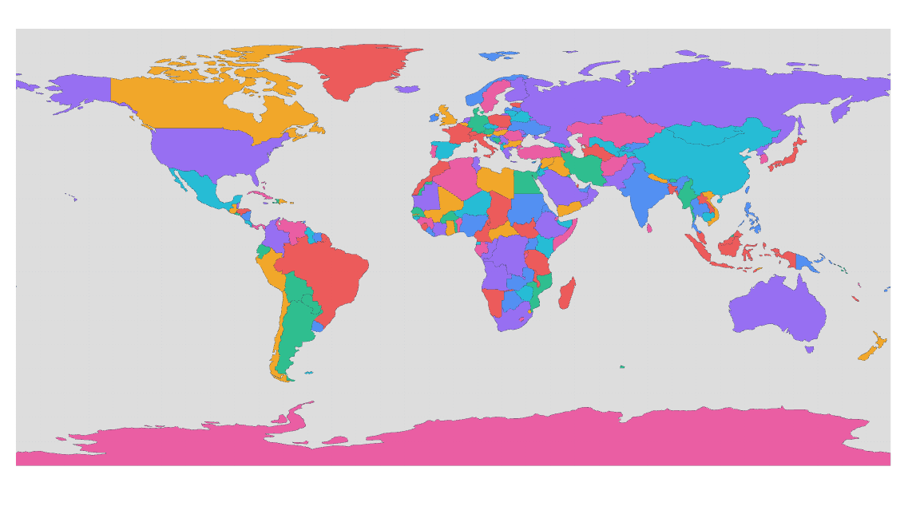
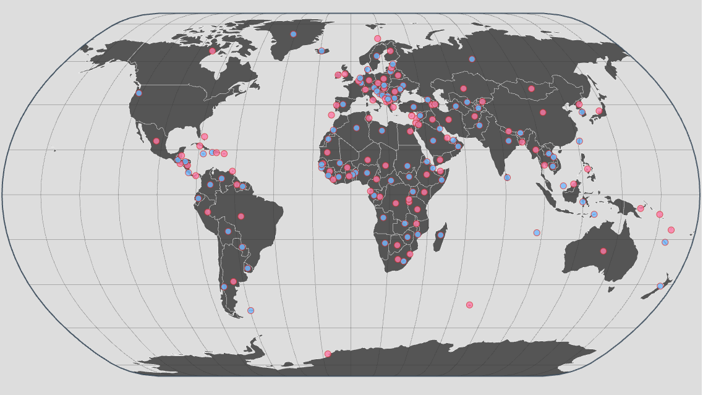
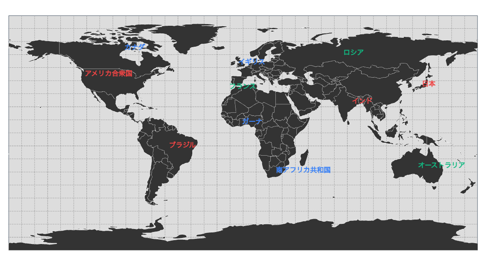
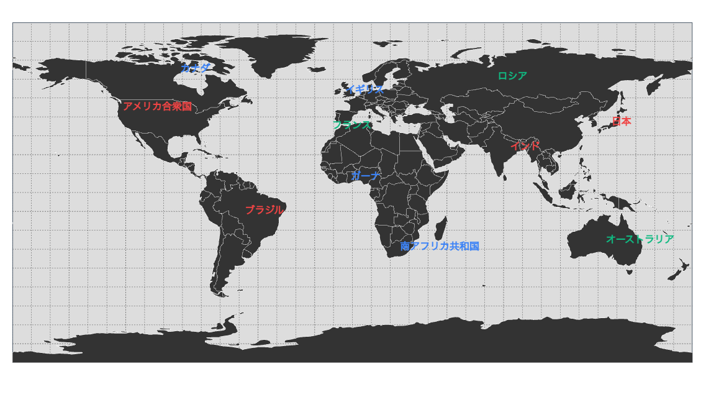

d3-thematika Examples
主題図作成ライブラリのサンプル集
基本レイヤー


 



GeoJSONレイヤー
GeoJSONデータを表示する基本的なレイヤー。様々なスタイルオプションと動的スタイル関数の使用例。
ポイント円レイヤー
GeoJSONのフィーチャを円で表示するレイヤー。サイズや色を動的に変更できます。
画像レイヤー
画像データを地図投影に合わせて表示するレイヤー。衛星画像や地形データの表示に最適。
ポイントテキストレイヤー
GeoJSONのフィーチャにテキストラベルを表示するレイヤー。地名やラベルの表示に使用。
ポイントアノテーションレイヤー
GeoJSONポイントに詳細なアノテーション（注釈）を表示。サブジェクト形状、引き出し線、テキストボックスを柔軟にカスタマイズ可能。
ポイントスパイクレイヤー
3Dスパイク（棒グラフ）でデータを可視化するレイヤー。人口や統計データの視覚的な表現に最適。
凡例レイヤー
地図の凡例を自動生成するレイヤー。D3スケールと連携して様々な凡例タイプに対応。
ライン接続レイヤー

ライン接続レイヤー
頂点を直線・弧またはスムージングしてで結ぶレイヤー。都市間の接続や移動経路の可視化に使用。
ラインテキストレイヤー
LineString上にテキストを配置するレイヤー。ライン方向への自動回転、位置指定、複数配置に対応。
統合デモ

エフェクト・ユーティリティ